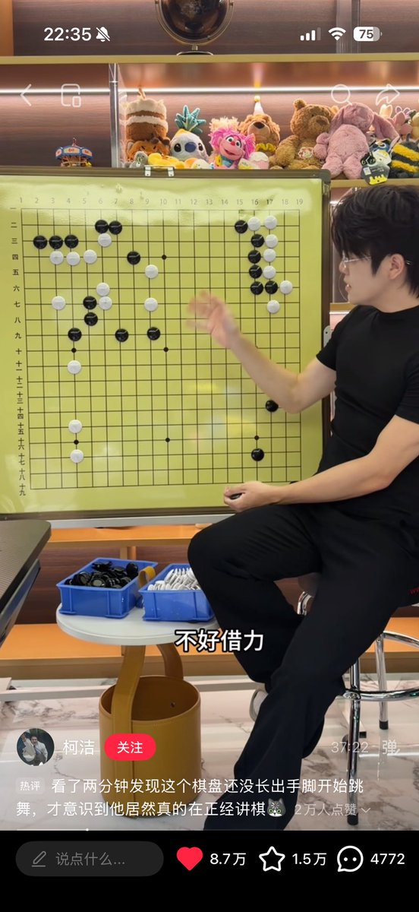

莉莉莉
@lisianthus2088
@nonsense_778 我不行了怎么还有调理效果

floating ice🐾
@nonsense_778
柯洁怎么帅成这样了。。我之前想测试自己智性恋程度的时候就会去看柯洁。如果对素颜柯洁我都能产生“也不是不行”的念头，那说明我的智性恋浓度已经高到需要干预了。这个时候就得赶紧刷几个无脑帅哥视频对冲一下，我还是希望自己能颜控一点的
但现在柯洁真变帅了没法起到这个作用了 https://t.co/76jh4pqW2E